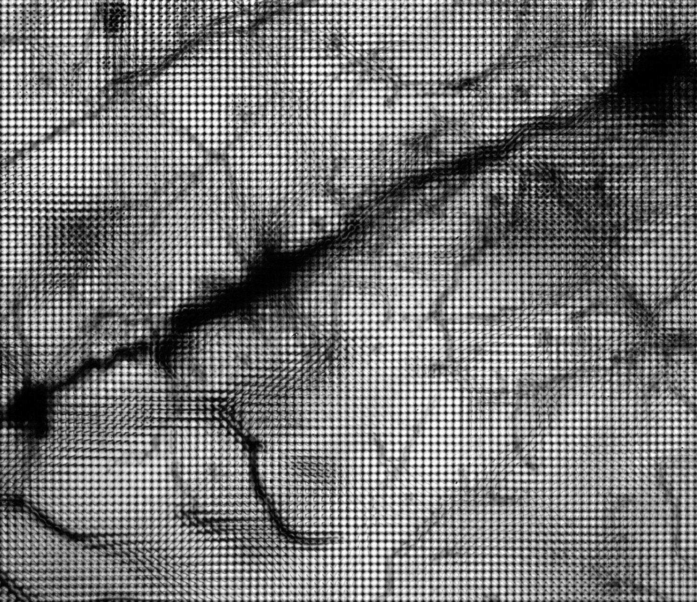

Light Field Camera
A Project Update and Pivot
Minos Park
26631485
Bryan Perez
3032315274

 Raw light field images of neurons
Raw light field images of neurons
Abstract
Capturing 4D light field with plenoptic camera allows computational refocusing, computational correction of lens aberrations and more.
In this project we wanted to extend Project 3-2 to implement the ability to refocus after the ray tracing is done, by having each pixel be a grid recording radiance from different directions.
Before pivoting, our proposal was a scene simulator. The proposal can be found here.
Details on Pivot and Project's New Direction
Slides and video can be found here.Why Pivot?
The feedback we got from initial proposal was helpful in reckoning a few overlooked holes. Megan gave an outlook that the project seems "lack of moderate technical challenges." After the feedback was released, we discussed ways to better communicate in the proposal of our initial ideas in-depth to show the technical challenges.After a few more discussion, we ultimately decided that it would be better if we pivot completely and work on ideas that were shown on the course website. Since by doing that, we can offload our worries about clarifying the depth of technical challenges and focus on making progress in the project, which by then we were running out of.
Hence, this document serves as both our proposal and progress update.
New Direction of The Project
- Abstract
Please refer to the abstract above.- Background
The current ray tracer uses pin-hole or thin lens model which once the ray tracing is done, loses the ability to change the focus plane and cannot do after-the-fact change of aperture. The rendered scene is essentially a printed photo. If we implement a new type of lens called microlens on the previous model, which closely follows the Lytro camera model, then we can obtain pixels containing more data than the previous model. In turn, we can also implement a computational refocusing mechanism to get images that have different focus after the ray tracing is done.We begin our project by extending Project 3-2 a thin-lens ray tracer. We will use the light field lens introduced in lecture as the model to implement in our camera.
- Relevant papers/articles
- Light Field Microscopy
- - Paper: Light Field Microscopy
- - The above Light Field Microscopy webpage links to many other related resources.
- Light Field Photography with a Hand-held Plenoptic Camera
- The (New) Stanford Light Field Archive
- Goals and Deliverables/Tasks
-
While discussing how to approach the project, Professor Ng mentioned that we should try to do multiple "parts" that are all related to a topic -- in this case, light field. That would truly enable us to explore the subject in various ways.
So each approach layed out here is less seqencial, dependent on each other and more a full project on its own. The expectation is that we will get at least one approach well completed and the rest of the approaches are excercises for our expansion of experience and satisfying the curiosity for the subject.
- First Approach -- LF data generation by the ray tracer from Project 3-2 with addition of a Lytro camera like microlens that was covered in the class
- Implementing microlens
- Last offering of this course had a project implementing a set of camera lens in our ray tracer system. Confer that project for how to implement microlens
- Have more details on the resolution of the microlens
- Check the rays progressing through the microlens, against what is expected.
- Save a screenshot of rays going through the microlens
- Confirm we get the somewhat expected raw data that is similar to the paper
- Computational refocusing mechanism To use the gathered LF data, we can now work on the mechanism to enable refocusing and more
- Start with something simple. As in lecture's example, try selecting just same (u,v) pixel from each data points and see how it does
- Following the paper listed above, implement the ability to choose the focus plane
- (optional, do this while exploring the second approach)
Make an interactive application that will take in the raw LF data and show various images. - Second Approach -- Use real world LF data and create a viewer that interactively shows the user various perspective of a captured image.
- The data is captured by arrays of DSLRs and u,v location of the camera is saved as metadata. We can use this to produce LF refocused image.
- Make a simulator that accepts LF images and produces interactive demo
- Similar tasks as the first approach's Computational refocusing mechanism
- - Start with something simple. As in lecture's example, try selecting just same (u,v) pixel from each data points and see how it does
- - Following the paper listed above, implement the ability to choose the focus plane
- Hope to deliver: stretched goal
- We scheduled quite a lot for a single project. Although we hope to deliver all, it is likely that we may only finish one of the approaches laid out in the previous section
Prelim result and reflection on plan
Initially the first approach was taken and yet the microlens implementation is proven to be hard. Unfortunately, the amount of work necessary to make such progress was not met. There is not much to exhibit because the product so far does not work. Naturally, there was more revision of the project.Second approach will be taken during the final phase of the project. We will focus on implementing the computational refocusing mechanism and test the mechanism with the LF data available at Stanford Light Field Archive. As mentioned in the revised deliverable/tasks section, we plan to do what Professor Ng suggested.